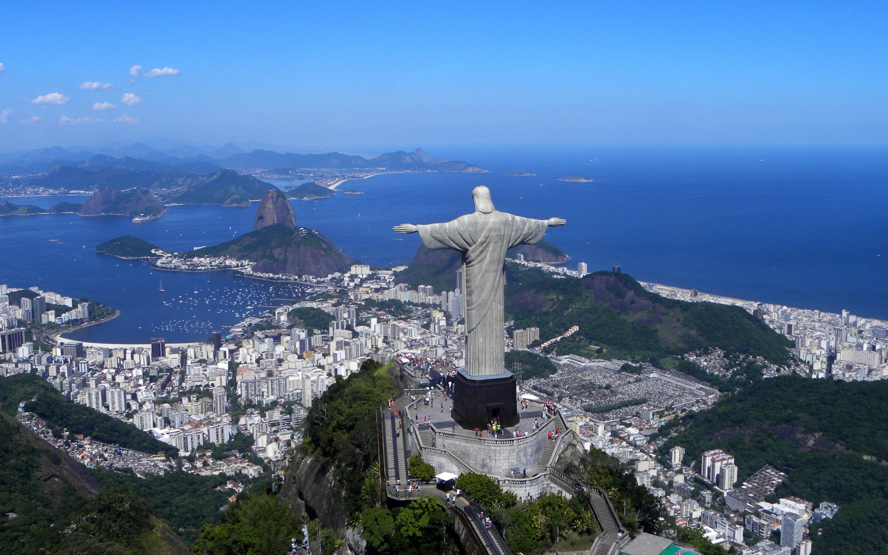

Por que esse site?
Para o turista que está em visita ao Estado do Rio de Janeiro, as opções de atividades de contato com a natureza são bem vastas. Pensando nisso, fiz essa lista apontando as mais procuradas. Lembrando, sempre que possível sempre faça com um guia! Uma ótima procura e espero que gostem!
Outras pedras turísticas do Rio de Janeiro:
Corcovado
A trilha do Morro do Corcovado tem início no Parque Lage e leva aproximadamente 2:00 horas até chegar no seu topo. O Corcovado é famoso por ter em seu cume a estátua do Cristo Redentor, de 38 metros de altura. O Cristo é um dos principais cartões postais do Brasil, tendo uma vista panorâmica de 360° do Rio de Janeiro!
Morro do Pão de Açúcar

São diversos morros localizados na região da Urca e Praia Vermelha. No entanto uma peculiaridade envolve esse complexo, ele possui bondes para subir em seus cumes. A implementação dos bondes aconteceu em 1912, com a operação de alpinistas e atividades bastante arriscadas. Hoje a localidade possui uma das vistas mais belas da capital.
Pedra Bonita

Localizada no Parque Nacional da Tijuca, a sua trilha de acesso tem início na praia de São Conrado, e é a mesma que dá destino à rampa de voo livre da Pedra Bonita. a vista do Destino final é de tirar o fôlego, com vistas para a Pedra da Gávea, Morro Dois Irmãos, Praia de São Conrado e Barra da Tijuca.
Pedra da Gávea

A sua trilha de acesso tem início em um condomínio na Barrinha, sendo uma das mais desafiadoras do Rio de Janeiro. Possuindo um ganho vertical de 840 metros, a vista final é espetacular, sendo ela bem parecida com a da Pedra Bonita.
Pedra do Telégrafo

Localizada na zona oeste do Rio, em Barra de Guaratiba, A Pedra do Telégrafo é famosa nas redes sociais pelas fotos tiradas por simular um abismo. As fotos se tornam cômicas, são tiradas de todos os jeitos imagináveis.
Pedra do Raio

A PEDRA DO RAIO NÃO É A DO TELÉGRAFO! Está localizada no topo da Pedra da Gávea, para chegar a ela, deverá caminhar e escalar em uma trilha de pedras. Não é recomendado posar da mesma forma que na Pedra do Telégrafo!